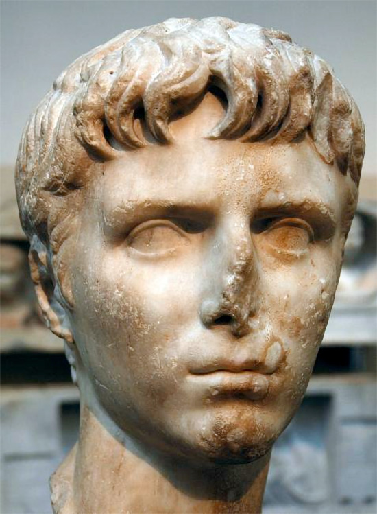
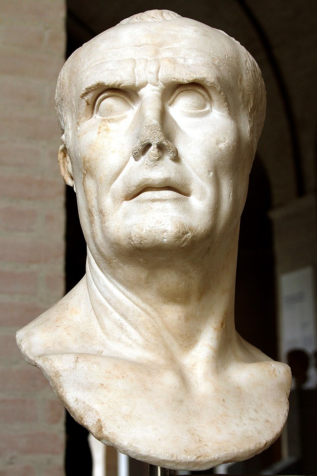

Biografia di Giulio Cesare
- Nome originale: Gaius Iulius Caesar
- Titoli: Padre della Patria, Divo Giulio
- Nascita: Roma, 12 o 13 luglio 100 a. C.
- Morte: Roma, 15 marzo 44 a. C
- Coniuge: Cossuzia, Cornelia Cinna Minore, Pompea, Calpurnia
- Figli: Giulia, Cesarione, Ottaviano (adottivo)
- Gens: Giulia
- Padre: Gaio Giulio Cesare Il Vecchio
- Madre: Aurelia Cotta
- Questore: 69 a. C.
- Edile: 65 a. C.
- Pretore: 62 a. C.
- Propetore: 61 a. C.
- Console: 59 a. C., 48 a.C., 46 a.C., 45 a.C., 44 a.C.
- Dittatore: 49-44 a. C
- Pontefice Massimo: 63-44 a.C.
Il Praenomen
Spesso si scrive Caio Giulio Cesare, ma il nome corretto è Gaio Giulio Cesare. La corruzione di Gaio in Caio deriva dalla tradizione latina che abbreviava con C. il praenomen Gaius (Gaio) e con Cn. il praenomen Gnaeus (Gneo). Tali tradizionali abbreviazioni derivano a loro volta dal fatto che gli Etruschi, che esercitarono una forte influenza sulla prima fase storica di Roma, non distinguevano fra la "G" e la "C". Pertanto il suo vero nome era Gaio Giulio Cesare. « E' opera di Cesare se, dalla passata grandezza dell'Ellade e dell'Italia un ponte conduce all'edificio più magnifico della moderna storia del mondo, se l'Europa occidentale è romanza, se l'Europa germanica è classica... l'edificio di Cesare è durato oltre le migliaia d'anni che hanno cambiato religione e Stato al genere umano e che hanno mutato perfino il centro di gravità della Civiltà e continua ad esistere per quella che noi chiamiamo eternità. » (Theodor Mommsen, La storia di Roma, V, 7.).
Volto di Cesare fanciullo
La nascita e la carriera
Cesare nacque il 12 o 13 luglio del 100 a.c. a Roma da un'antica e gloriosa ma non ricca famiglia patrizia, la gens Iulia, che faceva risalire le sue origini a Iulo, figlio di Enea, che aveva come madre la stessa Dea Venere. Come dire che era una stirpe divina, il che deve aver influenzato non poco le ambizioni di Cesare, unitamente ad un'intelligenza e una mobilità mentale non comune. Fin da giovanissimo Cesare coltivò grandi ambizioni, voleva essere sempre il primo, come confessò più tardi ai suoi amici riferendosi ad una povera tribù barbara della propretura in Spagna: 'Vorrei essere il primo tra costoro piuttosto che il secondo a Roma'. Il ramo della Gens Iulia a cui apparteneva portava il cognome Caesar, da cui il nome Giulio Cesare.
Busto di Gaio Mario
La famiglia però non era ricca né influente, ostacolo insormontabile per chiunque volesse accedere a una carriera politica o militare, per cui Cesare dovette contrarre sempre ingenti debiti rischiando il tutto per tutto, ma Cesare affrontò grandi rischi di ogni genere nella sua vita. Suo grande maestro fu lo zio Gaio Mario, Generale e Console per sei volte, un eroe dei populares, che lo addestrò nel fisico e nelle armi, e gli inculcò la difesa del popolo e dei deboli contro il potere dei nobili. Però proprio per questo lo zio si era attirato l'ostilità degli Optimates, i senatori nobili, che di riflesso odiarono anche Cesare. Ebbe due sorelle, una delle quali, Giulia minore, fu la madre di Ottaviano, il successore di Cesare. Viveva in una casa della Suburra, quartiere povero e malfamato, il che indica le condizioni economiche della sua famiglia, dove era pericoloso girare di sera, ma dove ebbe come insegnante Antonio Gnifone, illustre grammatico della Gallia.
Cesare in campo militare
Cesare era uomo dalla grande inventiva e prontezza di riflessi. Le sue strategie non si somigliavano mai, rendendo al nemico imprevedibili i suoi movimenti. Riusciva a prendere iniziative in tempi velocissimi e a fare cose mai fatte prima, come combattere per nave, o muovere guerra in inverno mentre l'esercito romano si muoveva nella stagione calda. I soldati avevano grande fiducia in lui, sia nelle sue capacità, sia nella cura che aveva di risparmiare la loro vita, sia nella generosità ed equità nella spartizione dei bottini; prima di ogni battaglia si rivolgeva al proprio esercito in modo trascinante e nello stesso tempo molto razionale, spiegava loro lo svolgimento della battaglia affinchè fossero preparati alle modifiche. Era così persuasivo da chiedere il loro consenso alle battaglie, anche le più pericolose, per esempio nella guerra civile contro Pompeo, e l'adesione arrivò sempre. Cesare chiamava i suoi soldati commilitoni, cioè cum-militantes, cioè quelli che combattevano insieme a lui; un titolo di parità e non di gerarchia. Li riforniva di ottimi equipaggiamenti, dando loro delle armi decorate con oro e argento per aumentare il loro prestigio, in parte perchè così erano rinforzate, ma soprattutto perchè facessero l'impossibile per non perdere in combattimento armi tanto preziose.
Cesare scrittore
Da giovane aveva preso a modello, a quanto pare, Strabone Cesare, e nella sua "Divinazione" ne riportò letteralmente alcuni brani, tolti dall'orazione "Per i Sardi". Pronunciava i discorsi, dicono, con voce alta e acuta, e il suo gestire era concitato e ardente, ma non privo di eleganza. Ci rimangono alcune sue orazioni, ma in diversi casi la provenienza non è sicura. Senza alcun dubbio, i commentari sulle gesta nella guerra gallica e in quella civile contro Pompeo rappresentano la più grande e certa fonte di cui disponiamo per quanto riguarda la produzione letteraria attribuita a Cesare. Cicerone così si esprime: "Scrisse anche dei Commentari che si devono assolutamente ammirare: sono nudi, scarni e belli, spogliati di qualsiasi ornamento oratorio come un corpo della sua veste. Ma, mentre volle offrire agli altri il materiale per scrivere la storia, forse fece opera grata agli inetti che vorranno agghindarlo con riccioli artificiosi, ma distolse i sani di mente dallo scriverne"
Stile:
- - Chiarezza ("perspicàitas"): procedimento lineare e terso, privo di pensieri contorti e involuti.
- - Brevità ("brevitas"): mira all'essenzialità e alla rapidità.
- - Assenza di ornamenti superflui: come intuì Cicerone.
- - Eleganza del dettato ("urbanitas"): pochi scrittori della latinità competono con lui in purezza e proprietà linguistica.
- - Armonia e simmetria dei costrutti: concetto di "concinnitas", definito da Cicerone come il massimo esempio di equilibrio nella scrittura.
Lessico:
- - Abbandono della tendenza all’arcaismo.
- - Scelte lessicali mirate, anche a costo di ripetizioni.
Sintassi:
- - Predilezione per la paratassi sull’ipotassi, per motivi di chiarezza.
- - Periodare lineare e lucido.
Le Idi di marzo
Il giorno delle Idi di marzo, il 15, Calpurnia pregò il marito di restare in casa, ma Cesare, che la sera prima aveva detto che avrebbe preferito una morte improvvisa alla lenta vecchiaia, fu convinto da Bruto a recarsi in senato, riferendo che tutti i senatori si erano riuniti per nominarlo re. Lungo la strada verso il Senato, racconta Plutarco, un insegnante di nome Artemidoro, amico di amici di Marco Giunio Bruto, gli mise tra mano un libello in cui gli denunciava la congiura, di cui qualcosa era trapelato. Ma Cesare non potè leggerlo. Giunto alla Curia di Pompeo, fu avvicinato dall'aruspice Spurinna, che lo aveva avvisato di guardarsi dalle Idi di marzo. Mentre Bruto intratteneva Antonio fuori dalla Curia, al segnale Longo sfoderò il pugnale e colpì Cesare al collo, causandogli una ferita superficiale. Allora entrambi, narra Plutarco, cominciarono a urlare, Cesare in latino: "Scellerato Casca, che fai?". E lui, in greco, volgendosi al fratello: "Fratello, aiutami!". Cesare si difese come una belva ferita, finché Bruto, che forse era figlio suo e di Servilia, sua amante, lo colpì all'inguine. e qui Cesare pronunciò le sue ultime parole: - Anche tu Bruto, figlio mio! - Allora si coprì per morire composto, ben sapendo, come lo sapeva anche Socrate morente, che la morte è brutta da vedersi. Sembra ricevette 23 pugnalate. La Curia in cui Cesare era stato ucciso venne murata e le idi di marzo proclamate «giorno del parricidio».
Approfondisci su RaiStoria